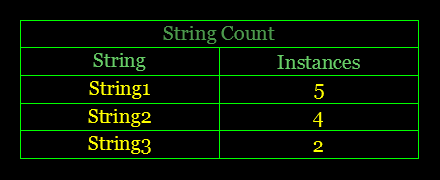

Text Counter
This page is delivered for consistency purposes only, as part of the LeeMac sample module of DynALisp, which shows how DynALisp turns existing AutoLISP programs into a module. The program and its description are the work of Lee Mac, who keeps all the credit for them. The original page, with the latest version, is on Lee Mac's website: https://lee-mac.com/tcount.html
| Function Syntax | LM-TextCount – original syntax: TCount, alias TXTCOUNT: TCOUNT is an Express Tools command (see aliases) |
| Current Version | 1.1 |
| Compatible with AutoCAD for Mac? | No |
| Compatible with AutoCAD LT? | Yes |
| Original Page | lee-mac.com/tcount.html |
Program Description
This program prompts for a selection of Text, MText, MLeaders, Attributed Blocks, or Dimensions with a dimension text override, and proceeds to count the number of occurrences of distinct strings contained within these objects.
The resulting data is then displayed in an AutoCAD Table Object, with strings sorted alphabetically. Table properties (such as line colour, text style etc.) are entirely dependent upon the settings implemented by the active Table Style. The width of the table columns and height of the table rows are both determined by the text height for a data row in the current Table Style.
Example of Output

Restrictions
- May only be run in an AutoCAD version in which the Table Object is available.
Bundled program notes
;;--------------------=={ Text Count }==----------------------;;
;; ;;
;; Counts the number of occurrences of each string in a ;;
;; selection and produces a report in an ACAD Table object ;;
;;------------------------------------------------------------;;
;; Author: Lee Mac, Copyright © 2011 - www.lee-mac.com ;;
;;------------------------------------------------------------;;
;; Version 1.0 - 07.11.2010 ;;
;; First Release. ;;
;;------------------------------------------------------------;;
;; Version 1.1 - 05.08.2011 ;;
;; Added Dimensions Override Text & MLeaders ;;
;; Updated 'AddTable' to account for Annotative Text Styles. ;;
;;------------------------------------------------------------;;
Command Names And Aliases
As in every DynALisp module, each program of this sample module has one main command, named LM-*, and the original command names of Lee Mac's page are kept as its aliases: they run the same command, and can be added, renamed or removed in Dyl-Suite (saved in Resources\Aliases.csv).
| Command | Aliases | Name |
|---|---|---|
| LM-TextCount | TXTCOUNT | Text Count |